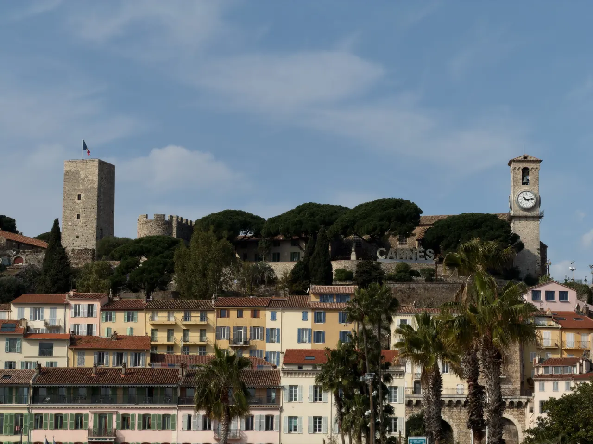

{kind=link}
관광·미술관
Nous avons déjà des billets.
이미 표가 있습니다.
누 자봉 데자 데 비예

화려한 국제영화제와 명품 호텔 대로로 유명한 칸(Cannes)이 본래 작은 중세 어촌 마을이었다는 사실을 유일하게 증명하는 역사 지구다.
기원전 로마 시대 감시탑이 있던 해발 66m의 언덕 위에 11세기 레랭(Lérins) 수도원의 수도사들이 외적과 해적을 방어하기 위해 요새와 망루를 세우면서 칸의 역사가 시작되었다.
가파르고 좁은 자갈 계단길인 뤼 생탄투안(Rue Saint-Antoine)을 따라 오르면 파스텔톤 지중해 가옥들과 로컬 비스트로들이 이어지고, 정상에 오르면 16세기 프로방스 고딕 양식의 노트르담 드 레스페랑스 성당(Notre-Dame d'Espérance)과 중세 성채 박물관이 나타난다. 성당 앞 광장에 서면 호화 요트들이 빼곡한 구항구(Vieux-Port)와 크루아제트 대로, 지중해 바다의 레랭 제도가 한눈에 들어온다.
영화제의 상징인 붉은 카펫(Palais des Festivals)을 보기 전, 포르빌 시장(Marché Forville)에서 아침 간식을 사 들고 르 쉬케 언덕을 올라 칸의 원초적 풍경을 굽어보는 것이 가장 품격 있는 칸 여행법이다. 45~60분이면 정상 왕복과 전망 감상이 가능하다.
| 운영시간 | 골목은 시간 제한 없음. 정상 박물관 9월 화~일 10:00~13:00·14:00~18:00, 매표·입장은 폐관 30분 전 마감 |
|---|---|
| 휴무 | 언덕 골목·전망대 연중 개방 |
| 예약 | 예약 불필요 — 개별 방문 자유 입장 |
| 소요시간 | 60분 재확인 |
| 메모 | 정상의 Musée des explorations du monde 는 9월 월요일 휴관이다. |
| 항목 | 상세 정보 |
|---|---|
| 위치 | Le Suquet, 06400 Cannes, France |
| 운영/요금 | 언덕 마을 및 성당 광장 자유 개방 / 무료 |
| 성당 개방 | 매일 09:00–18:00 (무료 입장) |
| 카스트르 박물관 | 화–일 10:00–13:00, 14:00–18:00 (입장료 €6.50) |
| 접근 교통 | Cannes 기차역에서 도보 12~15분 (포르빌 시장 경유) 또는 시내 미니버스(Navette City Palm) |
👟 신발 팁: 계단과 돌바닥 경사가 가파르므로 굽 있는 구두 대신 편안한 운동화 착용을 권장합니다.
르 쉬케 언덕을 오르는 주 진입로인 뤼 생탄투안(Rue Saint-Antoine)은 19세기까지 칸 어부들이 살던 좁은 골목이다. 수직으로 이어지는 경사 계단과 회반죽 벽면, 건물 사이를 잇는 작은 아치들이 전형적인 프로방스 해안 언덕 마을의 구조를 보여준다.
Nous avons déjà des billets.
이미 표가 있습니다.
누 자봉 데자 데 비예
On peut prendre des photos ?
사진 찍어도 되나요?
옹 푀 프랑드르 데 포토
Où commence la visite ?
관람은 어디서 시작하나요?
우 코망스 라 비지트

국제영화제의 상징 크루아제트 대로와 호화 요트 항구, 그리고 11세기 중세 어촌의 원형 르 쉬케 언덕이 공존하는 코트다쥐르의 영화 도시.

해발 92m 바위 절벽 위에서 천사의 만(Baie des Anges)과 구시가지, 림피아 항구를 360도 파노라마로 굽어보는 니스 최고의 천연 전망 공원.

지중해 꽃과 프로방스 제철 식재료, 그리고 갓 구워낸 니스 전통 소카(Socca)를 맛보는 유서 깊은 야외 시장 광장.

지중해로 60m 솟아오른 천연 바위 절벽 위에 조성된 모나코 대공국의 역사적 심장부이자 왕궁 마을.

칸 주민들의 부엌이자 지중해 해산물, 프로방스 과일, 꽃, 치즈가 가득한 1934년 유서 깊은 철골 재래시장.

관광객 중심의 쿠르 살레야와 달리 니스 현지 주민들의 진짜 장바구니 물가와 일상을 만나는 대형 야외 농산물 시장.